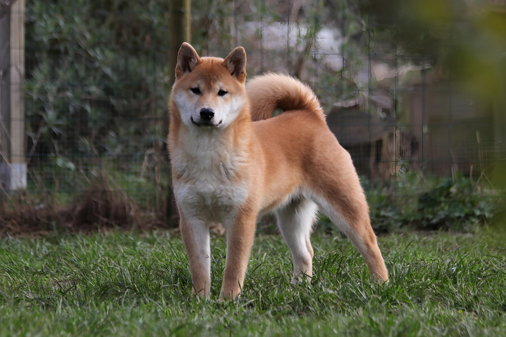

Adoptie Afstand Opvang Ons steunen Contact Linken
Welkom op de website van vzw Shiba rescue
Hier kan je informatie terugvinden over Shiba herplaatsers en aanverwante rassen. Volg onze dagelijkse updates en weetjes via Facebook.
Daiki - Ter adoptie